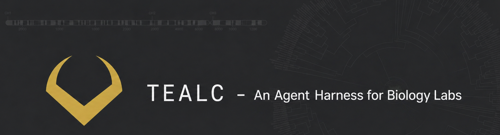

This is the technical guide for replicating what the Blackmon Lab built: an always-on autonomous research agent that handles email triage, grant monitoring, literature synthesis, R analyses, and overnight drafting, running continuously on a Mac via launchd. The guide covers the full stack, every configuration file, how to wire up Google APIs, and how to add your own tools and scheduled jobs. The source code is open on GitHub at coleoguy/tealc, but read the repo's Status section first: it is fitted to the Blackmon Lab's specific Drive layout, students, grants, and writing voice, and several jobs will not run for anyone else without significant rewiring. Treat it as one worked example, not a turnkey template.
Every section below is collapsed by default. Click a row to open it.
Two Python processes share a single SQLite database and auto-start on Mac login. The first is a Chainlit chat UI backed by a LangGraph ReAct loop: you talk to it, it uses tools, it remembers. The second is an APScheduler background daemon: it runs 59 scheduled jobs on a cron-like schedule without you doing anything. Both processes read and write the same SQLite file safely using WAL (Write-Ahead Logging) mode, so they never block each other. Google Drive stores configuration, memory, and credentials so the whole thing is portable across machines.
brew install r)Keep the project directory in a location that syncs to Google Drive. This is what makes the agent portable: move to a new Mac, clone the Drive folder, run the launchd installer, and the agent picks up where it left off including all memory.
00-Lab-Agent/
├── app.py # Chainlit UI entry point
├── agent/
│ ├── graph.py # LangGraph ReAct loop + system prompt
│ ├── tools.py # All tool definitions (158 tools)
│ ├── scheduler.py # APScheduler entry point + schema migrations
│ ├── privacy.py # Aquarium privacy classifier
│ ├── notify.py # Desktop + email notifications
│ └── jobs/
│ ├── __init__.py # @tracked() decorator for job telemetry
│ └── *.py # One file per scheduled job
├── data/
│ ├── agent.db # SQLite database (45 tables)
│ ├── config.json # Runtime config (folder IDs, email, hours)
│ ├── deadlines.json # Grant/manuscript deadlines (you edit this)
│ ├── lab_people.json # Privacy denylist + student seed data
│ ├── known_sheets.json # Friendly name to spreadsheet ID mapping
│ ├── grant_sources.json # RSS feeds and manual grant URLs
│ └── scheduler_heartbeat.json
├── scripts/
│ ├── install_launchd.sh # Writes and loads both plist files
│ ├── start_scheduler.sh # nohup start with PID file
│ └── stop_scheduler.sh # Kill via PID file
├── requirements.txt
└── .env # ANTHROPIC_API_KEY + Worker URL/secretcd ~/path/to/00-Lab-Agent
python -m venv .venv
source .venv/bin/activate
pip install -r requirements.txtKey packages and why each one matters:
AsyncSqliteSaver from langgraph.checkpoint.sqlite.aio.langchain_anthropic.ChatAnthropic.AsyncIOScheduler with CronTrigger and IntervalTrigger for the 59 jobs..env file. Use an explicit path so launchd finds it when starting from /.
All five Google APIs (Gmail, Calendar, Drive, Docs, Sheets) share one OAuth 2.0 credential set. Go to Google Cloud Console, create a project, enable the five APIs, and create an OAuth 2.0 Client ID credential for a Desktop application. Download the credentials.json file into the project root.
On first run, the OAuth flow opens a browser for you to approve access. After approval, a token.json file is written alongside credentials.json. That token refreshes automatically. The scopes you need:
https://www.googleapis.com/auth/gmail.modify
https://www.googleapis.com/auth/calendar
https://www.googleapis.com/auth/drive
https://www.googleapis.com/auth/documents
https://www.googleapis.com/auth/spreadsheets
Keep credentials.json and token.json out of git. If you are using the Google Drive sync for portability, store them in the Drive folder alongside the code so a new machine can pick them up without re-running the OAuth flow.
ANTHROPIC_API_KEY=sk-ant-...
AQUARIUM_WORKER_URL=https://your-worker.workers.dev # optional
AQUARIUM_WORKER_SECRET=your-secret-here # optional
The agent loads this with load_dotenv(os.path.join(_HERE, ".env")) using an explicit path, not the current working directory. This matters because launchd starts processes from / by default, and a bare load_dotenv() call will silently fail.
data/config.json -- runtime settings the agent reads at startup:
{
"tealc_drafts_folder_id": "Google Drive folder ID for overnight drafts",
"heath_email": "you@yourinstitution.edu",
"working_hours_central": "8-20",
"goals_sheet_id": "Google Sheets spreadsheet ID for the goals portfolio",
"ntfy_quiet_hours_central": "22-7",
"ntfy_max_per_day": 20,
"ntfy_min_interval_minutes": 15
}data/deadlines.json -- grant and manuscript deadlines you maintain manually:
[
{
"name": "NSF DEB proposal",
"deadline": "2026-08-15",
"artifact_id": "Google Drive file ID of the draft .docx",
"type": "grant"
}
]data/known_sheets.json -- maps human-readable names to Google Sheets spreadsheet IDs so you can refer to them by name in tools:
{
"Goals": "1BxiMVs0XRA5nFMdKvBdBZjgmUUqptlbs74OgVE2upms",
"Coleoptera Karyotypes": "...",
"Student Tracker": "..."
}data/lab_people.json -- privacy denylist and student seed data. Names in the denylist are redacted from the public aquarium feed:
{
"privacy_denylist": ["Student Name", "Collaborator Name"],
"students": [
{
"full_name": "Jane Smith",
"role": "PhD student",
"status": "active",
"primary_project": "chromosome evolution",
"email": "jsmith@uni.edu"
}
]
}data/grant_sources.json -- RSS feeds and URLs the grant radar job scans every Monday:
{
"rss_feeds": [
"https://www.nsf.gov/rss/rss_www_funding_pgm_annc_inf.xml",
"https://grants.nih.gov/rss/rss_awards_query.cgi?query=evolution"
]
}The scheduler module handles schema creation and migrations on first run. There is no separate migration command to run. When you start the scheduler for the first time, it creates all 45 tables if they do not exist. The key tables to understand:
executed=0. Never set executed=1 until you have reviewed at least a week of decisions for that action class.
Tealc's system prompt is the most important file in the project. It is now organized as a set of XML-tagged semantic blocks: <persona>, <stance>, <review_default>, <uncertainty>, <skills>, <heath_profile>, <lab>, <behavior>, <tool_routing>, <state>, <safety_rules>, <workflows>, <scheduled_jobs>, <integrations>. Some principles that matter:
<safety_rules> ships with a <reason> citing the actual failure it prevents.<example> blocks for behavioral rules. Anthropic's research shows few-shot examples are one of the most reliable ways to steer model behavior.cache_control: ephemeral; the dynamic suffix (priorities, preferences, drive layout) is loaded fresh each chat-start. Prompt caching pays roughly 90% off on the cached portion.For the deeper design rationale — XML structure, the skeptical-reviewer stance, dialed-back imperative language, dynamic priorities, prompt caching, the SCIENTIST_MODE preamble that artifact-grade scheduled jobs share, and the research grounding behind each choice — see the companion page Designing Tealc's system prompt →.
Organize tools into logical groups and keep each tool definition close to 10-15 lines: a docstring, typed parameters, one clear job, one return format. Tools that write should confirm before writing when called from chat (show diff, wait for approval) but can write directly when called from scheduled jobs. The distinction matters: a job running at 2am cannot ask for approval. Build that into the tool signature or the caller convention, not as ad hoc logic.
The tool groups that ended up mattering most for a research lab: literature search (OpenAlex is the best free source; it has citation counts, abstracts, open-access links, and a clean REST API), Gmail drafting (never send, always draft), calendar read/write, Google Docs read and append, Sheets read/write with a safety pattern, R script execution with timestamped working directories, student tracking, and the goals/intentions/memory tools that make the agent coherent across sessions.
The executive loop is a scheduled job that runs every 15 minutes. It reads the current_context row, the top 3 active goals and their nearest milestones, and a compact history of recent decisions. It calls Haiku (not Sonnet; this runs 96 times a day and cost matters) with a structured output schema and one instruction: pick one action from an allowed list, explain why, assign a confidence score. Insert the result into executive_decisions with executed=0.
The allowed actions list is the safety mechanism. Start with a short list: surface a briefing, add an intention, refresh context. After a week of reviewing decisions and confirming the model's judgment looks sound, add one more class. Tealc currently has 16 defined action classes, including deadline escalation, overdue milestone flagging, VIP email reply drafting, stale briefing surfacing, and idle-triggered grant drafting. Never add "send email" or "delete anything" to the autonomous list. The executive loop should feel like a trusted colleague who flags things and prepares options, not one who acts without asking.
Make the loop idle-class-aware from day one. Read the idle_class field from current_context and use it to gate what the loop is allowed to do: nothing heavier than a briefing nudge when the lab is active, heavier background work when idle for 4+ hours, full science-job runway when deep-idle for 24+ hours. This prevents the loop from competing with active work and makes the overnight jobs feel like a gift rather than an interruption.
Each overnight science job follows the same pattern: check idle_class from current_context, bail immediately if not deep_idle (or idle, depending on job weight), do the work, write output to a dedicated table, insert a briefing row so Heath sees the result in the morning. The idle gate prevents the jobs from running during active work hours even if they are on the schedule.
For the literature synthesis job, the key design decision was per-project scope: each active research project in the goals sheet has a list of search keywords. The job fetches the most recent 7 days of OpenAlex results for each keyword, scores papers for relevance, and summarizes the top finds. Results go into a literature_notes table keyed by project. After a few weeks this builds into an annotated bibliography the agent can reference during drafting.
For R and Python execution, the key is isolation: each run gets a timestamped working directory, the script is written there first, then executed, then the output is captured. For R, a preamble script is prepended automatically to load standard libraries (ape, phytools, geiger, diversitree, tidyverse). For Python, the environment has pandas, numpy, matplotlib, scipy, sklearn, seaborn, and statsmodels. Results go into an analysis_runs table with the full script, stdout, stderr, and an interpretation by Sonnet.
An exploratory analysis job (Friday 3am) implements lightweight AI-scientist behavior: it picks one active project with a data directory, writes a 30–60 line Python script, runs it, interprets the result, and surfaces a briefing with the output. This is distinct from the queued-analysis job (Sunday 4am, R scripts derived from a project's stated next_analysis). Both feed the same analysis_runs table and both produce briefings tagged for morning review.
Once your overnight jobs are producing output, the next problem is trust: how do you know the drafts are any good before you read them? The v2 rigor layer adds three things that address this systematically.
Output ledger. Every research artifact produced by a scheduled job is logged to an output_ledger table before it enters the briefing queue. Each entry stores: job name, model used, prompt hash, input data SHA256, output text, a timestamp, and a critic_score field initialized to null. Nothing reaches Heath's morning briefing without a ledger entry. This gives you a complete provenance trail for every draft, hypothesis, and analysis result.
Adversarial critic. After each ledger entry is written, a critic job passes the output to Opus 4.7 with prompt-cached rubrics for your domain. The rubric scores four dimensions 1–5: factual support (are claims backed by cited evidence?), citation accuracy, hype (does the framing overstate what the data show?), and biological plausibility. Scores and flagged claims are written back to the ledger row. The morning briefing includes the critic score next to each draft so Heath knows before reading whether the output is likely solid or needs heavy review. Start with Haiku for the critic if cost is a concern; upgrade to Opus when you want stricter evaluation.
Reproducibility bundles. For every analysis run (R or Python), write a tar.gz bundle containing: the script, the input data manifest (file paths + SHA256 hashes), sessionInfo (for R) or pip freeze (for Python), and a plain-language reproduction instruction. Store bundles in a bundles/ subdirectory. Any result can then be reproduced from the bundle alone, without relying on the agent's memory of what it did.
Cost telemetry. Track every API call with input tokens, output tokens, cache hit rate, and estimated USD cost. A weekly summary job aggregates these and writes a line to the briefing: "Science layer cost this week: $X.XX. Cache hit rate: Y%." This keeps costs visible and catches runaway jobs early. With prompt caching enabled on your domain rubrics and system prompt, expect 50–70% cache hit rates on the critic and overnight jobs.
Two launchd plists keep the agent running across login, sleep, and restart. Write them into ~/Library/LaunchAgents/ and load them with launchctl load. One plist starts the Chainlit UI; one starts the scheduler daemon.
Example plist for the scheduler:
<?xml version="1.0" encoding="UTF-8"?>
<!DOCTYPE plist PUBLIC "-//Apple//DTD PLIST 1.0//EN"
"http://www.apple.com/DTDs/PropertyList-1.0.dtd">
<plist version="1.0">
<dict>
<key>Label</key>
<string>com.blackmonlab.tealc-scheduler</string>
<key>ProgramArguments</key>
<array>
<string>/path/to/.venv/bin/python</string>
<string>-m</string>
<string>agent.scheduler</string>
</array>
<key>WorkingDirectory</key>
<string>/path/to/00-Lab-Agent</string>
<key>RunAtLoad</key>
<true/>
<key>KeepAlive</key>
<true/>
<key>StandardOutPath</key>
<string>/path/to/00-Lab-Agent/data/scheduler.log</string>
<key>StandardErrorPath</key>
<string>/path/to/00-Lab-Agent/data/scheduler_err.log</string>
</dict>
</plist>
Set WorkingDirectory to the project root. Set KeepAlive to true so launchd restarts the process if it crashes. Use the full path to the virtualenv Python binary. Load both plists with:
launchctl load ~/Library/LaunchAgents/com.blackmonlab.tealc-scheduler.plist
launchctl load ~/Library/LaunchAgents/com.blackmonlab.tealc-chainlit.plist
Verify with launchctl list | grep tealc. The scheduler writes a heartbeat timestamp to data/scheduler_heartbeat.json every 60 seconds; check that file to confirm the daemon is alive.
The Goals Sheet is a Google Spreadsheet with five tabs: Goals, Milestones, Today, Decisions, and Research Projects. The schema for the Goals tab:
goal_id | title | description | importance (1-5) | status | deadline | notes | last_updated
The importance score (1 = highest) is what the executive loop and conflict detection use. The Today tab is a single column of prioritized actions the daily plan job writes at 6:30am. Heath can edit it before standing up. The Research Projects tab has the fields the overnight science jobs read: project_id, keywords, current_hypothesis, next_analysis, linked_artifact_id, data_dir, output_dir.
Do not use a polling sync job for the Goals Sheet. An earlier version of Tealc ran a bidirectional sync every five minutes, which hit Google Sheets API quota limits (429 errors) under normal lab activity. The current approach is on-demand: the agent exports the full goal portfolio to Sheets only when explicitly asked (via the export_state_to_sheet tool), and reads from Sheets on startup and after edits. This is more reliable and keeps the API footprint small.
The aquarium is a Cloudflare Worker that stores and serves Tealc's recent activity publicly. The agent PUTs a JSON blob to the Worker after each tool call; the website fetches from it. The Worker stores only the last 50 events in a KV store.
The privacy gate in agent/privacy.py classifies every tool call before it is pushed. The rule: research tools (literature search, web search, citation tracking, lab website read) publish their query. Everything else gets a generic description ("read file", "checked calendar", "drafted email"). Student names, email content, and file names are never published.
If you do not want a public feed, skip the Cloudflare Worker entirely. The aquarium push is wrapped in a try/except that logs failures to a file and never raises. The agent operates identically without it.
The architecture generalizes beyond a biology lab. The pieces that are domain-specific are the system prompt, the grant sources list, the known sheets, and the R preamble. Everything else -- the dual-process SQLite coordination, the executive loop, the goals sheet sync, the briefing infrastructure, the launchd setup -- is reusable as-is.
The design choices that matter most regardless of domain: keep the executive loop in advisor mode for at least a month before promoting any action class; build the briefing infrastructure before the jobs (a job that cannot surface its output is invisible); make the privacy gate explicit rather than relying on the model's judgment in a hot path; keep the overnight jobs idle-gated so they never interrupt active work; and use on-demand export for any bidirectional sheet sync rather than a polling job (polling hits quota limits). The cost of running this full system (59 scheduled jobs, morning briefing, email triage, overnight science layer, adversarial critic, cost telemetry) is roughly $60–80/month at current Claude API pricing, dominated by the overnight science jobs and the adversarial critic pass on each output.